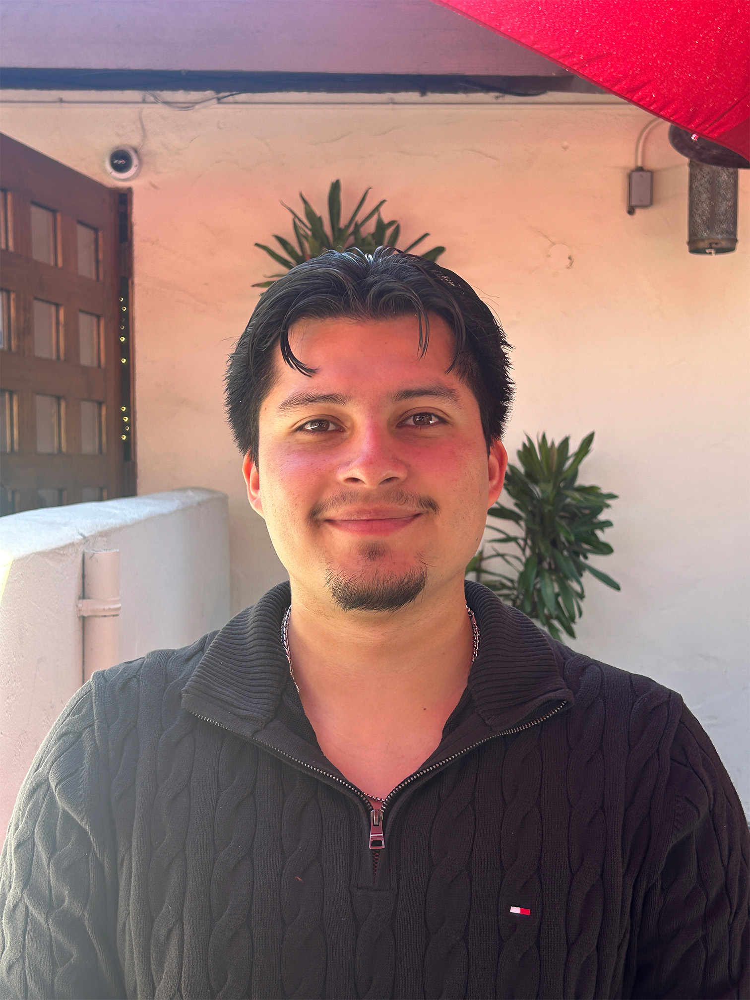

ABOUT ME
Creative thinker, intentional designer, and lifelong question asker.
I love taking creative ideas and figuring out how to make them real. My interests lie at the intersection of design and production, where digital concepts become packaging, printed materials, and experiences people can actually interact with.
Asking questions is a big part of how I design. I like understanding why something works, how it can be improved, and what it takes to produce it. That curiosity pushes me to experiment, problem-solve, and think beyond what I see on the screen.
View My Resume →EXPERIENCE
A little bit of what I've been up to.
Bay Cities — Structural Design Intern
Worked within the Structure Department developing corrugated packaging, dielines, displays, and structural concepts using ArtiosCAD.
KCPR University Radio — Art Team & Production Team
Creating art for different departments in the station and helping organize live music events.
Phoenix Challenge — Structural Concept Lead
Leading structural packaging concepts for a year-long client project focused on packaging redesign and innovation.
SKILLS & SOFTWARE